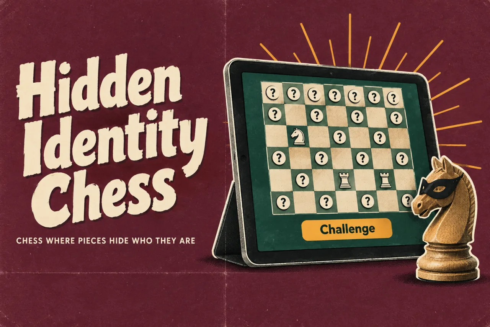
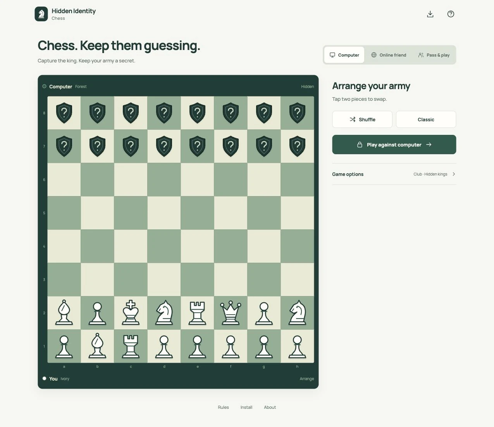

Hidden Identity ChessProduct story · 5 min read
Familiar chess. Very different information.
A digital adaptation of Hidden Identity Chess, with private setup, bluffing, challenges and a focused play surface.
- My role
- Digital adaptation, private setup & game interaction design
- Project
- Independent adaptation · Triple S Games rules · Playable web game


Actual local computer-mode interface. The opponent’s identities remain hidden while the player’s own army is visible.
View full size ↗01 The problem
How do familiar controls explain a game with unfamiliar information?
A familiar chessboard is useful orientation, but it can also create the wrong expectations when piece identities are hidden and bluffing is allowed. I focused the adaptation on explaining what is private, what a player can do now and how a challenge changes the game.
Designed for Chess player learning a hidden-information variant. Understand which information is private and which action is available.
User context Design assumption
Recognising the board while learning different movement and challenge expectations.
- The friction
- Ordinary chess habits can conceal the rules that changed.
- Design implication
- Name the unusual actions and keep their consequences inspectable.
Example situation · illustrative scenario. Imagine knowing how a knight moves but not knowing which enemy piece is a knight. The board is familiar; the information behind the decision is not.
02 The direction
What shaped the design
The board alone cannot explain the rules. Setup, hidden identities and the three turn actions need to be visible in the interaction.
Original project and interface captures · reviewed October 2026
My direction. I kept the board central and made the difference between moving, bluffing and challenging explicit.
Process and product scope
I separated arranging an army from playing it. In same-device mode, a covered handoff protects the next player’s view. Online play needs the same distinction in what each player receives, not just a visual cover over shared data.
Zen mode keeps the board, players, turn and Move, Bluff and Challenge controls in view. History, hints and secondary tools move into sheets so they can be inspected without permanently shrinking the board.
The rules and original game concept are credited to Triple S Games. This is an independent digital adaptation. I treated computer play, shared-device play and online rooms as separate flows because they have different privacy and connection requirements.
- Private
- opponent identities stay hidden
- 3 modes
- computer, shared device and online
- Move / bluff / challenge
- explicit turn actions
- Arrange
Place an army privately before the game.
- Play
Choose a move or a bluff with the visible information.
- Investigate
Use history and a challenge when a move needs scrutiny.
03 Design decisions
The choices behind Hidden Identity Chess
Open a decision to see the reasoning and trade-off.
01Make hidden information explicit
+
Show the player’s own identities and keep the opponent’s pieces visually hidden.
Why this matters. Someone should understand the information available to each side before making a move.
The trade-off. Shared-device privacy depends on a clear handoff; it cannot stop someone looking at the screen at the wrong time.
02Name the unusual actions
+
Keep Move, Bluff and Challenge as separate controls with rules available nearby.
Why this matters. The familiar board should not make a new player assume ordinary check-and-checkmate behaviour.
The trade-off. A challenge can refer to earlier play, so its target and consequence need careful explanation.
03Give the board the space
+
Use the focused play view and move history and secondary tools into deliberate inspection surfaces.
Why this matters. The board is easier to read when optional tools do not compete for its space.
The trade-off. Hiding history can make challenges harder to investigate. The route back to a past move must remain obvious.
04 The outcome
A familiar board with clear private information.
I designed setup, private handoff and the focused game view around the information each player can use. The game supports computer, same-device and online play, with explicit challenge controls and local saving. I still want to test whether a new player understands the handoff and can investigate a challenge.

More about the experience
- Independent adaptation. The original concept and rules are credited to Triple S Games.
- Actual computer mode. The captures show the app, not a fabricated multiplayer session.
05 Reflection
Familiarity should help someone learn, not conceal a different rule.
I would watch where an experienced chess player applies an ordinary rule that does not belong here. Those moments would tell me where the adaptation needs a clearer explanation rather than another hint.
What I would evaluate next proposed work
- arrange an army, make a bluff and investigate a past move with a first-time player.
- shared-device handoff, keyboard square navigation, a disconnected online player and restoring a local game.
Keep the table moving. Keep the turn clear.